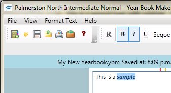
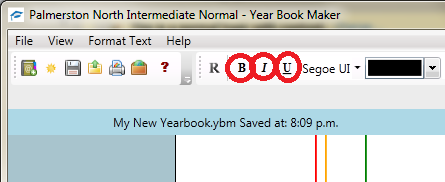

Adding Bold, Italic or Underline
1.Click once into the text box or select text inside a text box

2.Click on the Respective button to change the formatting
B for bold
I for italics
U for underline

If your formatting was successful then the icons will appear blue when you highlight text with those styles on
**note** if font is formated and unformatted in the same selection it will show it as off
i.e. Bold and normal text when selected at the same time will appear normal
Created with the Personal Edition of HelpNDoc: Free Web Help generator